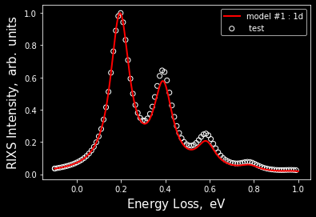

First things first
import phlab
Now let’s create our work space which is a wrapper for all the experiments and models:
workspace = phlab.rixs()
One of the main objects is a model. You can create any number of models and fit them to the exeperiment.
Here were are starting with single harmonic oscillator model. Check ./model_name/ for input and output files.
model = workspace.model_single_osc(name = '1d')
creating model : /Users/lusigeondzian/github/phlab/examples/01_example/1d
/Users/lusigeondzian/github/phlab/examples/01_example/1d/_input/
no input found
creating new input
warning : please check new input
number of models : 1
Input is normally reading from ./model_name/_inputs/input_model_{nm}.json and is an atribute of the model
model.input
{'problem_type': 'rixs',
'model': '1d',
'method': 'fc',
'vib_space': 1,
'coupling': 0.1,
'omega_ph': 0.195,
'nf': 10.0,
'nm': 100.0,
'energy_ex': 10.0,
'omega_in': 10.0,
'gamma': 0.105,
'gamma_ph': 0.05,
'alpha_exp': 0.01}
If you wish to alter input inside your code just call the prameter your want to overwrite. (Note: input file will be overwritten when you will run the model model.run())
model.input['coupling'] = 0.15
model.color = 'r'
model.run()
Now let’s create the experiment. At the very least you have to specify the path to file with exp data.
exp = workspace.experiment(file = 'test_data.csv', name= ' test')
Now to visulize everything you can create vitem and list the models and experiment objects that you would like to compare.
vitem = workspace.visual(model_list = [model], exp = exp)
Note: scale = 0 would normalizes everything by the maximum of intensity.
vitem.show(scale = 0)
